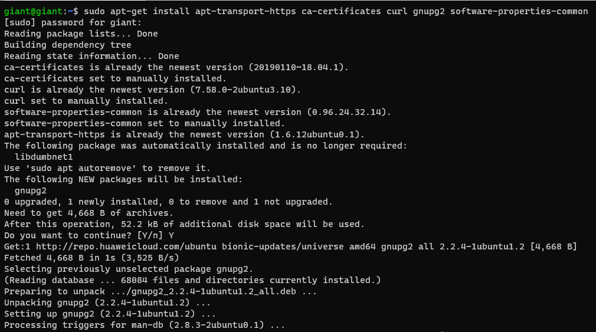
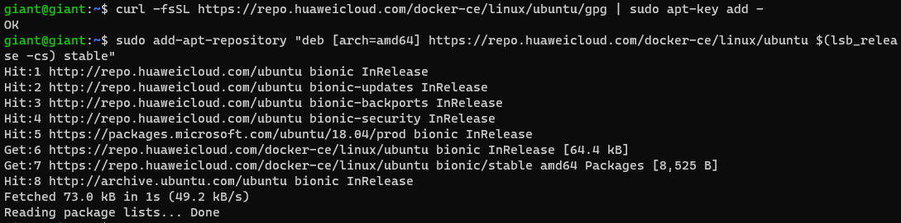
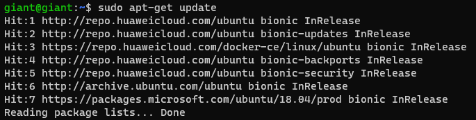
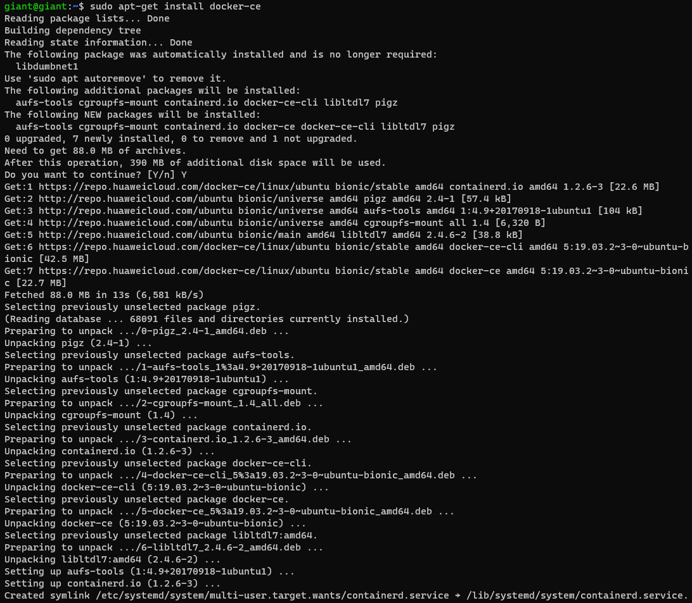
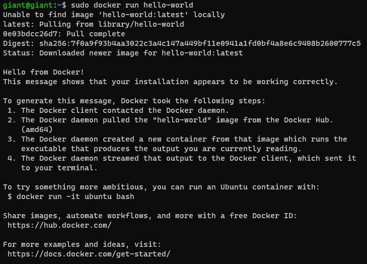

安装代码
1
2
3
4
5
6
7
8
9
10
11
12
13
14
15
|
sudo apt-get install apt-transport-https ca-certificates curl gnupg2 software-properties-common
curl -fsSL https://repo.huaweicloud.com/docker-ce/linux/ubuntu/gpg | sudo apt-key add -
sudo add-apt-repository "deb [arch=amd64] https://repo.huaweicloud.com/docker-ce/linux/ubuntu $(lsb_release -cs) stable"
sudo apt-get update
sudo apt-get install docker-ce
sudo docker run hello-world
|
安装依赖

信任Docker的GPG公钥/添加软件仓库

更新索引文件并安装


测试是否安装成功

方式二
脚本安装是最推荐的方式，只需要输入下面的命令，等待自动安装好即可。
sudo curl -fsSL https://get.docker.com | sh
Docker镜像加速
创建或修改 /etc/docker/daemon.json
1
2
3
4
5
6
7
8
| {
"registry-mirrors": [
"https://hub-mirror.c.163.com",
"https://1nj0zren.mirror.aliyuncs.com",
"http://f1361db2.m.daocloud.io",
"https://registry.docker-cn.com"
]
}
|
1
2
3
4
|
service docker restart
docker info
|
卸载Docker
1
2
3
4
5
6
7
8
9
10
11
12
13
14
15
16
17
18
|
docker system df
docker system prune
docker volume rm $(docker volume ls -q)
docker volume ls
docker inspect edgex_log-data
sudo apt-get purge docker-ce docker-ce-cli containerd.io
sudo rm -rf /var/lib/docker
sudo rm -rf /var/lib/containerd
|